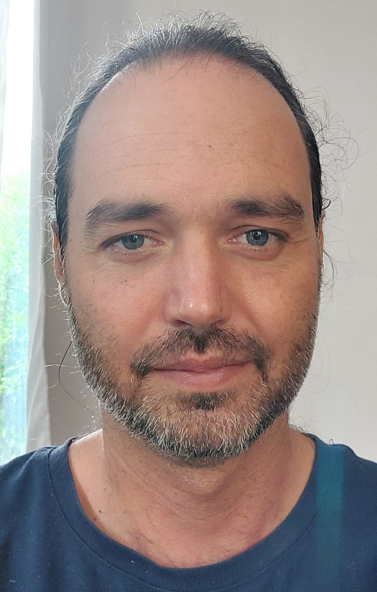

Le Chi Nei Tsang
Une écoute du ventre par un toucher en douceur, permettant de connecter et de réintégrer les différentes parties de soi-même.
Les charges émotionnelles sont assimilées et transformées en énergie utile.

PRATICIEN EN ARTS TAOÏSTES
Praticien en Chi Nei Tsang et enseignant de Qi Gong à Puyravault. Je vous accompagne par l'écoute du ventre et l'alchimie taoïste.

Une écoute du ventre par un toucher en douceur, permettant de connecter et de réintégrer les différentes parties de soi-même.
Les charges émotionnelles sont assimilées et transformées en énergie utile.

Une invitation à explorer l'alchimie interne par le mouvement, la respiration et l'intention pour transformer vos tensions en vitalité.
7 rue des Templiers, 85450 PUYRAVAULT
📞 Appeler : 06 10 58 31 75 ✉️ Envoyer un Mail